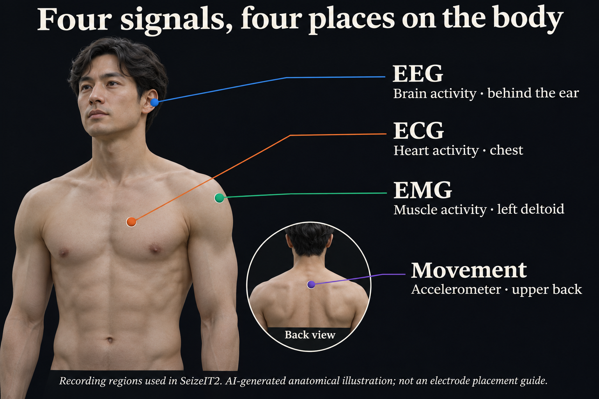

Keep patients separate
SeizeIT2 was the only training dataset. Development used 96 patients; the 29 locked-test patients were held out from model selection.
We test whether listening to brain, heart, muscle and movement can help detect seizures with fewer false alarms.
When an event happens unnoticed, it can be missing from the record a family shares with a doctor. ICTRA is a student research project working toward a better record.
Developed on 96 patients. Tested once on 29 other patients, after the models and analysis were frozen. Read the evidence →
Both models compared at 38% sensitivity on the locked test.
False alarms / 24 h Lower is better
The takeaway: at the same seizure-detection level, combining signals produced fewer false alarms than EEG alone.
29 unseen patients · offline models · per-patient averages. This comparison uses matched-sensitivity operating points; the frozen-threshold results are shown below.
Pre-registered H1: ΔFA/24 h −0.82, 95% patient-bootstrap CI [−1.29, −0.36]; P(improvement) = 1.000. Matched sensitivity 0.38. Full locked-test results and protocol.
A seizure can affect several body systems. Each signal provides a different view; no single change is enough to prove a seizure.

Same classifier and settings, same patients, same splits. The input signals change.
The learned models are also compared with four single-signal rules. How the AI learns and how we test it →
This answers a different question from the comparison above: what happened when we used the alarm threshold fixed before testing?
Offline Model C · four signals
29 locked-test patients · 181 seizures · 28 October 2026
| Measure | Locked test |
|---|---|
| Seizures detected — all types | 33% |
| Convulsive seizures detected | 77% |
| False alarms / 24 h | 0.23 |
Why you may also see 16%: 33% averages the seizure-detection rate across patients. Counting all 181 seizures together gives 16%; patients with many seizures then carry more weight. The two figures use different aggregations.
Overall patient-mean sensitivity: 0.331 [95% CI 0.197–0.480]. False alarms/24 h: 0.23 [0.06–0.48]. Event F1: 0.337 [0.205–0.477]. Convulsive sensitivity is also a per-patient average. Read the complete table.
A result is useful only if the test gave the model a fair chance to fail.
SeizeIT2 was the only training dataset. Development used 96 patients; the 29 locked-test patients were held out from model selection.
The models and thresholds were frozen. A public pre-registration preceded locked-set feature extraction and scoring. The test was run once.
What the timestamp establishes →Two threshold revisions were rejected. The development finding that EEG changes first did not replicate on the locked set. Both remain published.
Read the negative results →Dataset scale: 125 patients, 11,626 recording hours and 883 annotated seizures in total. That includes both development and locked-test data; it is not the training-set size.
Start with the part you want to understand.
Unnoticed events, incomplete seizure records and the limits of hospital monitoring.
Problem →Four-second windows, features, a learned score and a vote before an alarm.
AI & method →The signal-processing pipeline, acquisition platform and repeatable recording replay. Detection metrics come from SeizeIT2, not the bench hardware.
Engineering →Matched comparisons, frozen-threshold performance, confidence intervals and seizure-type breakdowns.
Evidence →Signal relationships measured across 695 development seizures, a null pre-ictal study and a threshold-search defect we corrected.
Research journey →Helena, Carina, Tiffany and Constance explain their signal branches, evaluation and limitations.
Meet the team →Synthetic signal demonstration
AI-generated concept render, not verified hardware or experimental evidence.